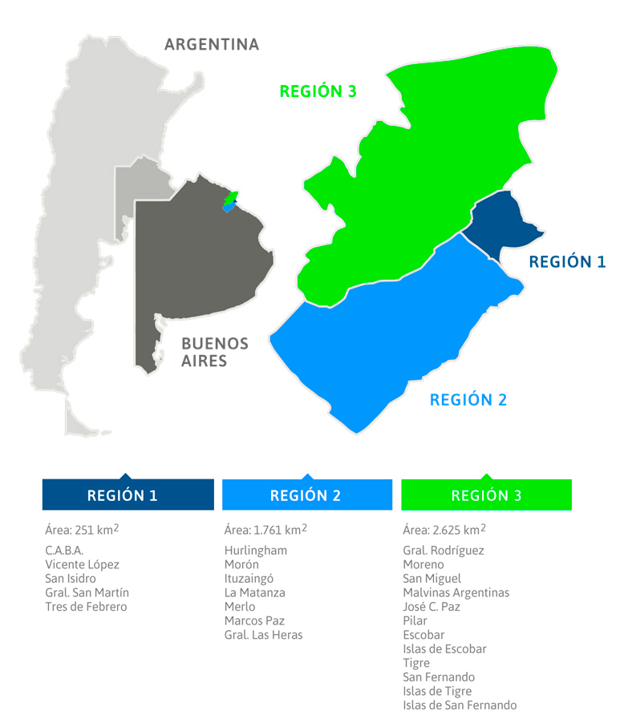

Quienes somos
Somos la mayor distribuidora de electricidad de la Argentina en términos de números de clientes y de electricidad vendida.
- Nuestra área de concesión comprende 20 municipios del noroeste del Gran Buenos Aires y la zona noroeste de la Ciudad Autónoma de Buenos Aires, lo que representa una superficie de 4.637 kilómetros cuadrados y una población de aproximadamente 9 millones de habitantes: 
- El sistema a través del cual suministramos electricidad está compuesto por 80 subestaciones de transformación de AT/AT, AT/AT/MT, AT/MT e interconexiones con clientes AT, lo que representa 19.439 MVA de potencia instalada y 1.553 kilómetros de redes de alta tensión de 220 kV, 132 kV y 27,5 kV. El sistema de distribución de MT/BT y MT/MT comprende 18.935 transformadores, lo que representa 9.274 MVA de potencia instalada, 11.784 kilómetros de líneas de media tensión de 33 y 13,2 kV y 27.754 kilómetros de líneas de baja tensión de 380/220 V.
- Realizamos la atención de los más de 3,2 millones de clientes a través de edenordigital, del Centro de Atención Telefónica, de nuestras redes sociales (Facebook / Twitter) y 25 oficinas comerciales distribuidas en nuestra área de concesión. Adicionalmente, brindamos respuesta a las consultas realizadas vía web a través de nuestro sistema de chatbot, mediante SMS y la atención de las solicitudes del Ente Regulador referidas a los reclamos por seguridad en la vía pública y falta de suministro.
- Cotizamos en la Bolsa de Comercio de Buenos Aires, formando parte del Índice Merval. Asimismo, previa autorización de la Comisión de Valores de Estados Unidos a partir del 24 de abril de 2007, la Sociedad comenzó a comercializar sus ADSs (American Depositary Shares) representativos de 20 acciones ordinarias de la Sociedad en la Bolsa de Nueva York (NYSE).